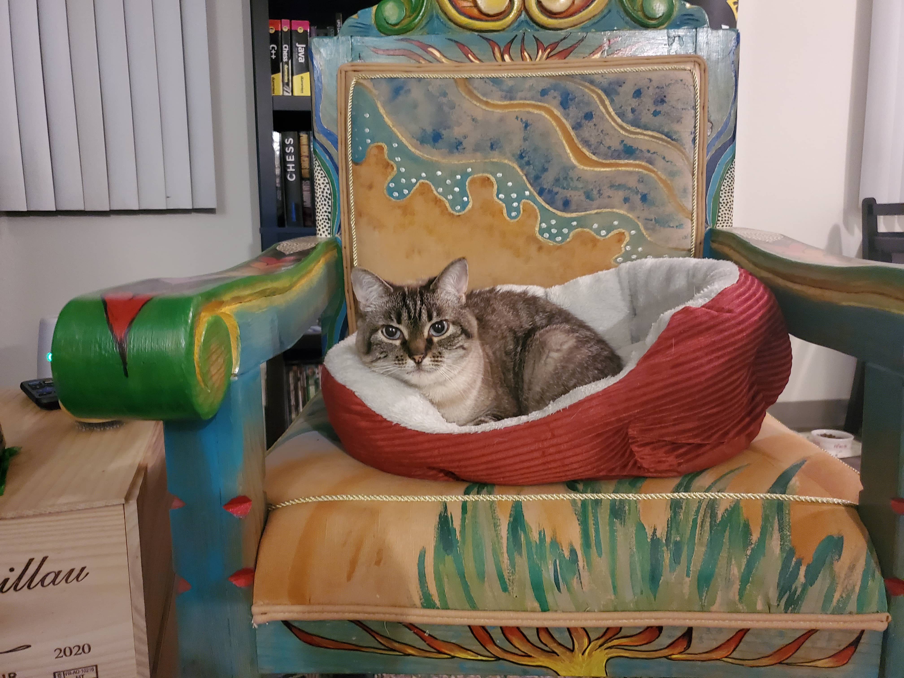

I have always been fascinated with the internet and started teaching myself web development in early 2022. I created this page to post about my hobbies and also showcase the different projects I have worked on. This page is UNDER CONSTRUCTION. Hopefully it won't be for too long. You can contact me by email at jholson.webdev@gmail.com and thanks for stopping by!!
This is the website's mascot/sysop, Cricket.
10/27/23:
Haven't really updated the site in the last few days. I got the Anbernic Win600 in the
mail the other day so i've been setting that up and tinkering with it. I've also been reading up on
responsive web development, like how to get websites to scale for phones
and tablets. I realized that the way i've shot myself in the foot with the way I have been coding
the website up until now.. There is a great possibility I will have to start
from scratch... But that's okay, it will be easier the second time around because I have all the
content to just cut and paste. I will definitely be changing the layout and color
scheme for the recipes page. I hate the way it looks right now.
One more thing... Today, one
month ago I started this website not expecting that anyone would care. So far i've
gotten 1,700 views which I think is pretty rad. Thank you all for finding something to enjoy here!
If there is something else you would like to see more/less of then please, reach out
to me at jholson.webdev@gmail.com I would love to hear from you!!
10/22/23:
Short update today. Added page two to the gallery. I was concerned with loading
times and the images appearing broken. I did, however, add more pictures!
Enjoy them!! Also most of my time for the forseeable future will be working on my 3rd Javascript
project, the calculator... This one is going to be tough but i'll
try to keep updating the site and adding new content.
10/21/23:
I decided to start work on a designated links page. I have so many awesome links to
websites I want to share and it would help with
de-cluttering the home page a bit. I applied to a few web-rings to help promote the site a bit and
it'll also give my users access to so many more websites
to check out. After thats done i'll start my research into how to make my site viewable on mobile
devices. Right now if you bring up the site on a Samsung or
iPhone it looks like a jumbled mess. Like it or not a large number of internet users are on
phones/tablets. I feel like Cricket deserves the extra audience.
Speaking of Cricket, I saw a HUGE jump in page views after I added my gallery page, and since almost
half of those pics were of my cat I can conclude that you all
would probably like to see more of her. I'll make it happen!
10/17/23:
Decided to implement a new side bar navigation for the main site. It makes the page
look a lot more clean I think. My next big update over the next few weeks
will include additions to the pixel-art sketchpad. I would like to add a layering function to it.
Before I do that I need to add the ability to save
sketches to a .jpg file. I don't know what it is about that project.. I should be long done with it
but something keeps drawing me back to it (pun intended).
It will be interesting to see how far I wll take it, and how far off I will push off the calculator
project.. I started
Baldurs Gate 3 last night. Before I knew it I spent 5 hours on it and barely got through the
prologue. I'm using a half-drow sorcerer build. I've
always used sorcerers and monks for these types of games. I like it a lot, it reminds me a lot of
Neverwinter Nights 2 which was the last Wizards of
the Coast PC game I played. I can easily see myself sinking tons of time into this game if I'm not
careful.. Oh well :) more to come soon!
10/15/23:
It's been a little while since i've updated the site! I spent all of last week
drilling myself on Javascript array methods and
I succeeded on turning my brain to mush. Although it might help me a little bit down the line. Since
I'm a masochist for this sort of thing i'll
continue to try to up my Javascript game. Anyway, I finished the photo gallery. Right now it's just
pictures of my cat and some food i've cooked.
I'll keep adding more to it though! Also, as the site is growing and the number of links increases I
need to rework the site navigation and the header
is not a good place for them. I'll think of ideas on how I want to do it.
10/5/23:
I updated the to-do app and added a edit button and fixed the positioning. Didn't do
too much today. I had a seizure
this morning. It was my first one in almost 7 months.. I'll probably take tomorrow off from updating
the site. Next week i'll finish up
the to-do app then start on my next project, a Javascript calculator. I've been dreading this
project for some time now, but I need to just
make myself start on it... Also my mom got a new kitten today and named it Buttons. I'll put pics on
the photo gallery once I build it. That's
all for tonight!
10/4/23 (part 2):
As you can see I started fucking around with sprite sheets and getting them
to animate with CSS. I know they
look bad now, but rest assured... they will maybe get better? Who knows. Shit's gonna get goofy
around here though, thats for sure!
10/4/23:
I removed the copyright bullshit on the footers. I realize that it was stupid to have
that and then also say that
the code is free to use. u.u S0RrY!
10/3/23:
I finished the bulk of my latest project tonight. It's a Javascript to-do app. Super
simple stuff. I linked it
to my projects page. Everything is saved to local storage so your tasks will be saved to the
browser. Will also add a partyTime
button that will display cat memes. Because that's super important must have 10,000% and I will
fight anyone who says otherwise!
10/2/23:
Added a few new recipes to the recipe page. I took a break the last few days. I've
been working on coding
projects for the last 8 days in a row. Decided to finish my current play-through of Cyberpunk 2077.
Going to get Phantom
Liberty this week and check that out. I'm also planning on adding a responsive photo gallery
sometime this week as well. Also
I may move these updates to their own page. We'll see...
9/29/23:
Linked the recipe main page. It's just a stub for now. I'm working on the first
recipe, Baked Cavatelli, because I
just had that for dinner the other night. Also, I'm going to do something about all this
'blank-space' in the homepage. Probably just
fill it with cat memes. I'm still going to completely revamp the layout. I'm working on getting more
proficient in CSS Grid to
accomplish that. Until now i've just been using Flexbox but i've always wanted to learn Grid so here
we go!
9/28/23:
Changed the color scheme to a black and green/amber color you would see on an old
computer terminal. Paired that with
a brand new font that had the old school computer feel to it. Also added a digital clock to the
header. Next I was thinking since I have
the 'food' tag on this page I will be adding a recipe page of some of my favorite stuff to make!
Stay tuned!
9/27/23:
Added the About page and wrote some rambling shit about life and my dislike of modern
big tech companies. Also
added the main project's page. After that it won't take very long to upload the stuff I already have
done. Plus I'm getting a new font
for the website. The one I had looked like poo. Next I will get a better color scheme for the site.
9/26/23:
Published website and create very basic layout. Will probably revamp in the future.
This is my last day off
from a 6 day vacation. I was meaning to create this page much earlier but I got distracted by the
new v2.0 Cyberpunk 2077 update.
I'll try to hold off from getting Phantom Liberty for a few months. In addition to working on this
site I am starting my next
Javascript project, plus working my day job..